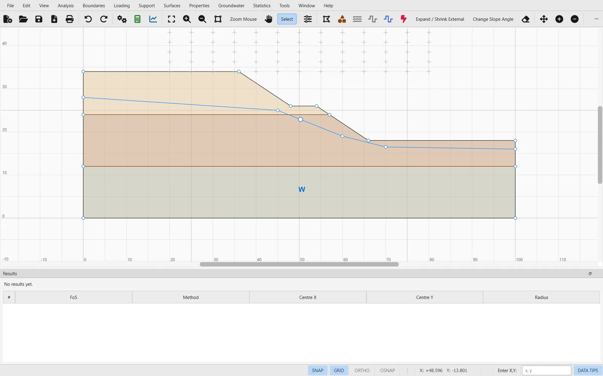

Este tutorial construye el talud de la página de inicio a partir de un proyecto vacío: un talud de 16 m con una berma a media altura, tres suelos y un nivel freático, analizado con tres métodos. Lleva unos quince minutos y recorre todos los pasos de un análisis típico. El modelo también está disponible ya construido: ej01-two-layer-slope.ogr.
1.2.1El problema#
Todas las coordenadas están en metros, con el eje hacia la derecha y el eje hacia arriba. El terreno desciende de izquierda a derecha: coronación en , una berma de 6 m de ancho en y el pie en ; las dos caras tienen una inclinación 1V:1.5H.
| Material | Capa | c′ (kPa) | φ′ (°) | γ (kN/m³) |
|---|---|---|---|---|
| Arena limosa | por encima de y = 24 | 5 | 32 | 19.0 |
| Arcilla | entre y = 12 y 24 | 12 | 24 | 19.5 |
| Grava densa | por debajo de y = 12 | 0 | 40 | 21.0 |
1.2.2Empieza un proyecto y configúralo#
- Arranca el programa (
ogr-slip2d). Se abre con un proyecto vacío; si no es así, usa File → New Project (Ctrl+N). - Abre Analysis → Project Settings… (Ctrl+J). En la página General mantén las unidades métricas con las tensiones en kPa y fija la dirección de rotura en left to right (de izquierda a derecha): el terreno desciende hacia la derecha.
- En la página Methods activa Bishop Simplified, Spencer y GLE / Morgenstern-Price, y fija el número de dovelas en 30.

1.2.3Dibuja los contornos#
Los contornos se pueden dibujar con el ratón, pero teclear las coordenadas es exacto. Con una herramienta de dibujo activa, escribe cada vértice en el campo Enter X,Y, a la derecha de la barra de estado, y pulsa Enter; termina el contorno con Enter en un campo vacío o desde el menú contextual (clic derecho).
- Boundaries → Add External Boundary (Ctrl+1):
0,0·100,0·100,18·66,18·54,26·48,26·36,34·0,34. El contorno externo se cierra solo. - Boundaries → Add Material Boundary (Ctrl+2):
0,24·57,24, el contacto entre la arena y la arcilla, que termina en la cara inferior. - De nuevo para el contacto arcilla–grava:
0,12·100,12. - Boundaries → Add Water Table (Ctrl+3):
0,28·45,25·60,19·70,16.5·100,16.

Un nivel freático solo produce presión intersticial en los materiales que lo usan. Cuando terminas de dibujarlo, el programa se ofrece a asignarlo; si omites ese paso, hazlo después con Properties → Assign Water Surface….
1.2.4Define y asigna los materiales#
- Properties → Define Materials…: crea los tres materiales de la Tabla 1.2.1, con tipo de resistencia Mohr-Coulomb y presión intersticial tomada del water table (nivel freático).
- Properties → Assign Materials: elige un material y haz clic dentro de su región; repite con las tres capas.

Una región que nadie asigna toma el primer material de la lista. Comprueba los colores en el lienzo antes de calcular; con DATA TIPS activado en la barra de estado, al pasar el cursor sobre una región se muestra su material.
1.2.5Elige las superficies de rotura#
La búsqueda por defecto es una rejilla de centros de círculos. Surfaces → Auto Grid coloca sobre el talud una rejilla dimensionada a partir de la geometría; Surfaces → Surface Options… muestra el tipo de superficie (circular) y el método de búsqueda (rejilla). Para cada centro, el programa prueba un conjunto de radios entre el del círculo más corto que alcanza el talud y el del más largo que queda dentro de los límites del talud.
1.2.6Calcula#
Analysis → Compute (Ctrl+T) ejecuta en segundo plano la búsqueda de cada método activado, con un diálogo de progreso y un botón de cancelar. Al terminar, el panel Results enumera las superficies más bajas y el lienzo las dibuja, con la crítica en rojo.

| Método | FS crítico | Superficies válidas | Detalle |
|---|---|---|---|
| Bishop simplificado | 1.300 | 1 489 | 4 iteraciones |
| Spencer | 1.290 | 1 466 | λ = 0.343 |
| GLE / Morgenstern–Price | 1.292 | 1 470 | λ = 0.432, función de medio seno |
No todos los círculos que genera la rejilla dan un resultado válido. Con Bishop, de 1 859 círculos, 185 no se pudieron dividir en dovelas, 181 no llegaron a un factor de seguridad convergido (código de error −111) y 4 no superaron la comprobación de m-α de la Sección 3.3 (código −112), lo que deja las 1 489 superficies válidas de la tabla. Analysis → Analysis Notes… explica por qué, y la ventana Interpret las cuenta por código de error.
1.2.7Interpreta#
Analysis → Interpret abre el resultado en su propia ventana: la rejilla de centros coloreada según el factor de seguridad, la superficie crítica, las superficies ordenadas y, de cualquier dovela, sus fuerzas, tensiones y presión intersticial. Elige el método en la barra de herramientas para comparar Bishop, Spencer y GLE.

Algunas cosas que conviene comprobar en cualquier análisis:
- El mínimo no está en el borde de la rejilla. Si el centro crítico queda en el borde, amplía la rejilla y vuelve a calcular.
- Los métodos coinciden. Las diferencias grandes entre Bishop y los métodos rigurosos apuntan a fuerzas entre dovelas inusuales; véase la Sección 3.2.
- Las presiones intersticiales son las previstas. Consulta las dovelas situadas bajo el nivel freático y comprueba su presión intersticial con la altura de agua que tienen encima.
1.2.8Guarda y sigue adelante#
File → Save escribe el modelo en un archivo .ogr, un JSON de texto plano que abren el programa, la línea de comandos, la API de Python y el servidor MCP. A partir de aquí: